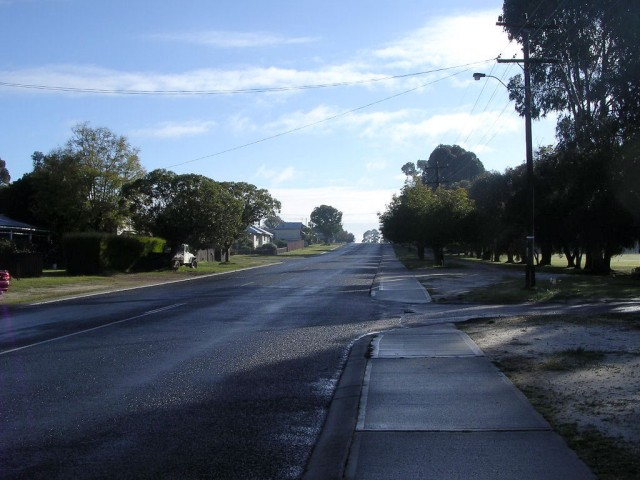
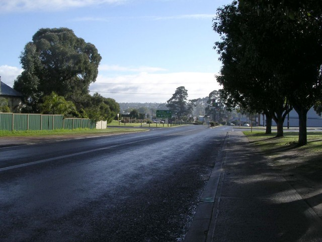
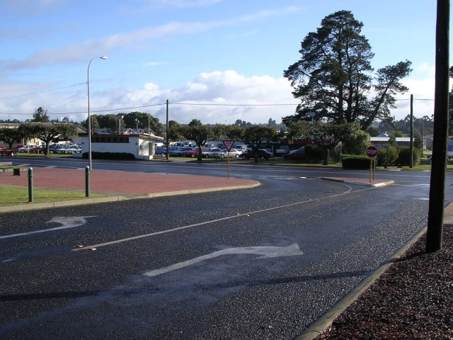
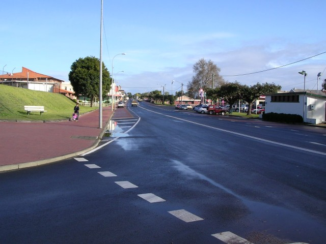
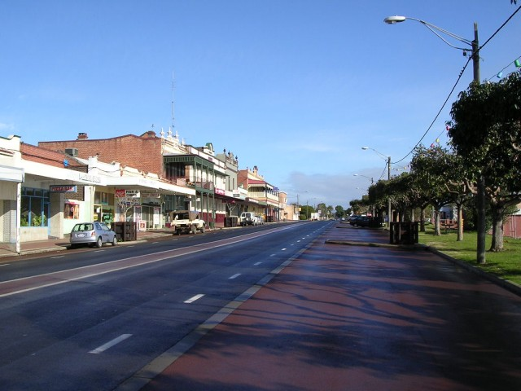
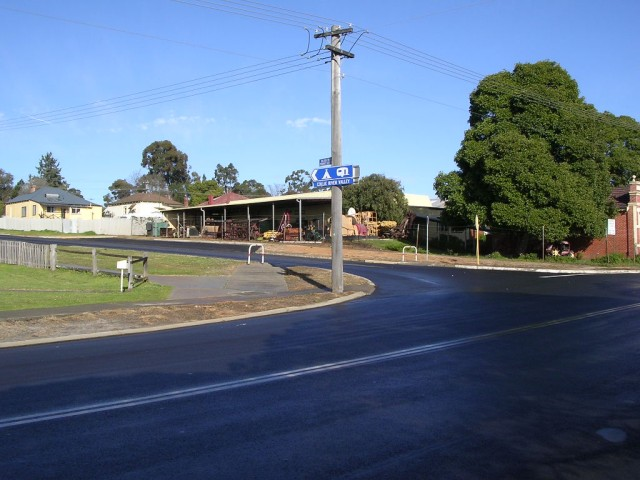
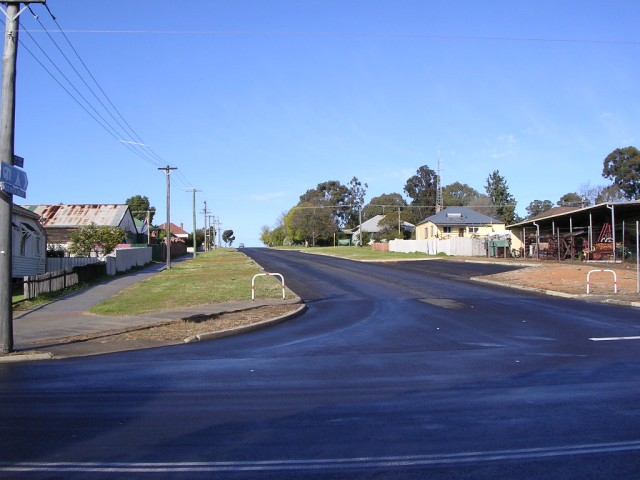

Numbers on the map represent the location where the photographs were taken. Scroll down to view the photographs.
Collie - Patterson Street and Throssell Street
|| Contents || Atkinson | Rowley / Mungalup / Crampton | Patterson / Throssell || Home ||
Numbers on the map represent the location where the photographs were taken. Scroll
down to view the photographs.
Return to racingcircuits.net's Photo Archive Main Index

13 - Patterson Street.

14 - Patterson Street.

15 - Left into Throssell Street.

16 - Start of Throssell Street.

17 - Halfway along Throssell Street.

18 - Left turn into Atkinson Street.

19 - Back onto Atkinson Street.
Photographs and Text ©Neil Fackerell. Reproduced here with kind permission.